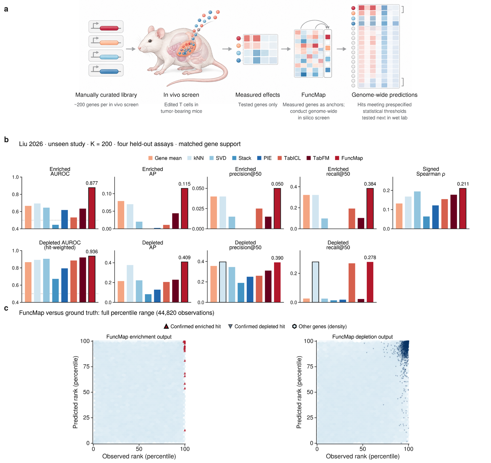

Transcriptional change is not functional outcome
Understanding how genetic perturbations affect cellular function is a central goal of T cell engineering. Recent perturbation models predict transcriptional responses well — but a change in gene expression does not necessarily translate into proliferation, persistence, or cytotoxicity. Learning those relationships has been blocked by the absence of a unified functional screening dataset: published studies sit in heterogeneous supplementary tables with inconsistent annotations, phenotype definitions, and effect-size conventions.
We introduce the T Cell Function Corpus, a standardized atlas of functional genetic perturbation screens assembled by an AI curation agent, and FuncMapTab, a tabular transformer that learns transferable relationships between perturbations and functional phenotypes across experimental contexts. On held-out studies, FuncMapTab consistently outperforms statistical, machine-learning, and single-cell foundation-model baselines at predicting perturbation effect rankings and identifying functional hits — and from only a few hundred measured genes it can predict effects for unmeasured perturbations, extending focused experiments well beyond their original scope.
The Corpus
113 screens, 1.26M gene-level effects, direction-harmonized across species, modalities and phenotypes.
The Curator
A multi-agent system that reads manuscripts and supplementary data at F1 = 0.915 and $2.00 per paper.
The Model
A tabular transformer predicting signed functional effects and hit scores in unseen screens and studies.
T Cell Function Corpus
Unlike conventional screening repositories that organize genes, hit lists and broad phenotype labels, our framework represents each perturbation measurement through seven interconnected metadata blocks: target, cellular system, intervention, assay, phenotype, effect, and screen.
Because functional T cell responses depend strongly on experimental context, the assay block captures stimulation conditions, timing of stimulation and harvest, culture environment, and the selection pressure applied — distinguishing acute anti-CD3/CD28 activation from repeated stimulation, tumor co-culture, in vivo tumor challenge, and immunosuppressive conditions. The effect block preserves reported effect size, significance, reference-control definition, and statistical method, together with a standardized direction convention.
- Species — 83 human, 28 mouse and 2 rat screens (822,304 / 333,054 / 104,467 effects).
- Receptor — 64 TCR-based and 49 CAR T cell screens, covering endogenous and engineered systems.
- Modality — CRISPR KO (70 screens; 1,057,410 effects), CRISPRa (7; 149,984), CRISPRi (3; 37,572), knock-in (30; 3,060), overexpression (3; 11,799).
- Scale — 34 genome-wide, 21 intermediate-scale and 58 focused screening experiments.
- Phenotypes — persistence (44 screens), proliferation (34), protein expression (28), trafficking (9), differentiation (5), plus function and viability.
Versus BioGRID ORCS. Among 37 PubMed-indexed publications, 30 studies and ~94 screens were absent from ORCS, which also lacked 12 of 34 assay instances from overlapping studies — including eight in vivo tumor and spleen readouts. Our corpus captures 36 metadata dimensions against 16, and nine specific functional readouts against two broad categories. Where they overlap, quantitative effects agree essentially perfectly (Spearman ρ ≥ 0.9999 in 25 of 25 screens).

T-Cell Curator
To build the corpus at scale we developed T-Cell Curator, an AI agent that extracts and standardizes metadata and quantitative perturbation effects directly from publications and their supplementary materials. A discovery agent searches for relevant studies, a retrieval agent collects full text and associated materials, and an extraction agent performs the extraction, using the schema as its manual.
The extraction workflow is a multi-agent system with a GPT‑5.5 orchestrator and three stages: an inventory agent identifies all reported screens, conditions and readouts; a triage agent examines supplementary tables to confirm or reject candidate screens and locate quantitative measurements; an extraction agent annotates the seven metadata blocks and links each readout to its gene-level effects. During the first five iterations a reflection agent converted expert feedback into reusable guidelines, accumulated in a shared playbook.
| System | Screen F1 | Precision | Recall | Field acc. | Cost / paper |
|---|---|---|---|---|---|
| T-Cell Curator | 0.915 | 0.911 | 0.919 | 98.0% | $2.00 |
| Claude Opus 4.8 | 0.814 | 0.771 | 0.862 | 95.3% | $8.39 |
| GPT-5.5 | 0.459 | 0.315 | 0.843 | 93.7% | $2.84 |
Benchmark of 10 publications, 49 screens and 113 readout records curated by a human expert. Paired study-level gains are significant against Opus (ΔF1 = 0.101, Holm-adjusted p = 0.0205) and GPT‑5.5 (ΔF1 = 0.456, p = 0.0439). Descriptive free-text recovery: 91.9% vs 87.5% and 87.1%.

FuncMapTab
FuncMapTab is a tabular transformer that learns from functional perturbation measurements across diverse experimental contexts, integrating three sources of information: gene-level effects from previously published screens, experimental metadata describing the target screen, and external biological knowledge about each gene.
A screen encoder represents experimental conditions — organism, perturbation modality, antigen receptor, selection pressure, functional readout. A gene-knowledge encoder integrates gene descriptions, Gene Ontology annotations, protein sequences, interaction networks and genetic dependency data. These are combined with measured effects in a tabular transformer using row–column attention, and an in-context transformer lets unmeasured genes attend to a small set of genes with known effects in the target screen.
To separate shared genetic effects from context-specific responses, each prediction decomposes into a donor prior estimated from the gene's effects in related screens and a predicted deviation learned by the transformer, together producing signed effect predictions and functional hit scores.

Results
We benchmarked FuncMapTab against baselines spanning three approaches: a statistical gene-mean baseline, conventional machine learning (kNN, SVD), single-cell foundation models (Stack, PIE), and pretrained tabular models (TabICL, TabFM). Performance is measured by Spearman correlation between predicted and measured gene effects, and AUROC for distinguishing significant functional hits.
Three tasks of increasing difficulty
- Imputation — recover held-out gene effects within a partially observed screen (20% held out).
- Unseen screen — only K measured genes revealed; same-readout sibling screens from the study excluded.
- Unseen study — all screens from the target publication excluded, with K revealed genes to guide prediction.
| Task | Setting | Spearman ρ | Hit AUROC | Strongest baseline |
|---|---|---|---|---|
| Imputation | 20% held out | 0.387 | 0.828 | TabFM / TabICL |
| Unseen screen | K = 200 | 0.388 | 0.827 | TabFM |
| Unseen study | K = 200 | 0.242 | 0.783 | TabFM (0.227 / 0.757) |
Across the 90 comparisons in Figure 4, FuncMapTab performed significantly better in 88, and no baseline significantly outperformed it. Stack and PIE — both transcriptome-trained foundation models — fell below the gene-mean baseline.

Direction matters: enriched versus depleted hits
Knowing whether a perturbation increases or decreases the measured phenotype is essential for selecting candidates — a researcher may want knockouts that raise cytokine production or lower an exhaustion marker. FuncMapTab's largest advantage was in identifying enriched hits: AUROC 0.814 on imputation against 0.653 for the strongest baseline. With 200 measured genes in an unseen screen, its top 50 predictions recovered 43.7% of enriched hits versus 26.8% for TabFM. In unseen studies, baseline enriched-hit rankings were near chance while FuncMapTab reached AUROC 0.741. For depleted hits, top-50 recall in an unseen study was 34.2% versus 29.0%.

From a focused in vivo screen to a genome-wide prediction
In vivo screens rely on small curated libraries because genome-wide screening in animals is resource intensive — one abundance screen alone required 22 tumor-bearing mice. We emulated that setting on a genome-wide in vivo held-out study: for each assay FuncMapTab received 200 measured genes and predicted effects for ~11,200 unmeasured ones.
Across the four assays it ranked enriched hits with a mean AUROC of 0.877 and average precision 0.115, against 0.694 and 0.079 for the strongest comparator, and recovered depleted hits with a hit-weighted AUROC of 0.936. Of 27 confirmed enriched hits, 21 landed in the top predicted decile; of 1,350 confirmed depleted hits, 962 did.

Data & code
The T Cell Function Corpus, the curation schema, and FuncMapTab training and evaluation code are released for research use.
Corpus download
Standardized screens, assay instances and gene-level effect tables with full metadata. Get the data →
Metadata schema
The seven-block schema and direction conventions used by the curation agent. View schema →
Correspondence: jamesz@stanford.edu, troth@stanford.edu
Citation
@article{mao2026tcellfunction,
title = {Predicting T-cell Function beyond Transcriptome},
author = {Mao, Yuncong and Dann, Emma and Zou, Jiaru and Wu, Sean and
Hartman, Austin and Marson, Alexander and Prichard, Jonathan and
Choi, Yejin and Roth, Theo and Zou, James},
journal = {bioRxiv},
year = {2026},
url = {https://yuncongmao.github.io/t-cell-function-corpus/}
}